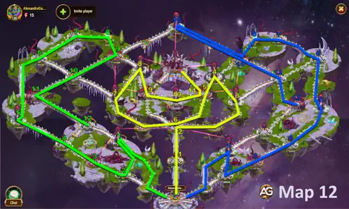
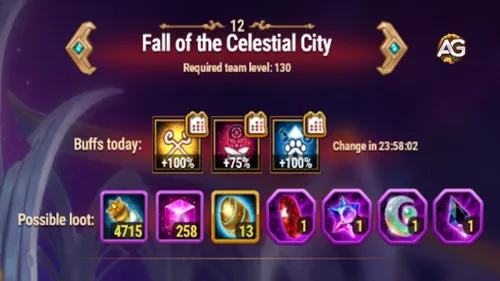

Here are the recommended routes for each player. Parentheses () indicate enemy towers that must be
destroyed to weaken the boss. Do not rush timing is everything.

Fall of the Celestial City Guide - Hero Wars: Dominion Era, a game developed by Nexters.
Adventure Map #12, Fall of the Celestial City, stands as one of the most thrilling and strategic challenges in
Hero Wars: Dominion Era. It’s not just about raw power, but about patience, coordination,
and the thrill of seeing your guild allies move together through an intricate battlefield.
If you’ve reached this stage, you’re no longer a beginner you are a tactician, a leader, and someone who understands
that the road to victory is paved with trust and teamwork.
Let’s dive into everything you need to know to master this map, from preparation to final boss defeat.
PET Adventure Map #12 – Fall of the Celestial City
Minimum Hero Level: 130+
Recommended Total Power: 700k+
This map is designed for three guild members, each taking a distinct path Blue, Yellow, and Green.
Every step counts. Buff towers, enemy squads, and boss mechanics weave together to form a puzzle that only
coordination can solve. As you progress, remember: the more towers you bring down, the weaker the boss becomes.
Communication is the secret ingredient of victory.
Understanding the Journey
Before jumping into paths and strategies, it’s important to visualize this adventure as a shared journey.
Every member has their mission, but none can succeed without the others. The Yellow path unlocks critical towers,
the Blue path is ideal for fast starters, and the Green path has traps of patience, waiting for allies before advancing.
Each decision echoes across the map one step too early, and your team might face an overpowered boss.
One step too late, and precious Action Points are wasted.
Strategy to Defeat the Boss
To bring this titan down, guildmates must coordinate their timing:
Yellow Path: The backbone of the fight. Responsible for removing the major buffs towers 28, 26, and 19. However, patience is key: Yellow must wait for Blue and Green to reach their checkpoints before advancing.
Green Path: The easier path mechanically, but filled with waiting traps. Green cannot take tower 25 until Yellow clears tower 14, or the path collapses into chaos.
Blue Path: Best suited for fast players who enter first. Their primary mission is to take down tower 34, which significantly reduces the boss’s destructive power.
Once these towers are destroyed, the boss becomes vulnerable. Stack your strongest heroes with pets that counter
the buff of the day, focus damage carefully, and remember: no single attack can take more than 1% of its HP.
Persistence, not bursts, will lead to victory.
The Boss Challenge
The boss in Map #12 is a true test of patience. Rushing into the fight without clearing towers is a mistake
that even experienced guilds sometimes make. The boss gains massive boosts until the Eye of Harbinger towers are destroyed.
Boss Buff
Effect
How to Remove
Damage Increase
+300% Damage
Beat Squad 34
Damage Resist
-95% Damage Taken
Beat Squad 26
Damage Resist
-95% Damage Taken
Beat Squad 28
Healing Increase
+500% Healing
Beat Squad 19
Boss Boost (Base Stats)
Increases damage dealt by 300%
Decreases damage taken by 50%
Multiplies Health by 10
Increases energy gain by 100%
Decreases debuff duration by 80%
No attack can damage more than 1% of max health
Immune to energy reduction
Map #12 Possible Loot
One of the greatest motivations to complete this adventure is the loot. Map 12 rewards you with a balanced
mix of potions, particles, and rare stones used for pets. Here’s what you can expect:

Possible Loot Map #12, Hero Wars Dominion Era.
Item
Amount
Notes
PET Potion
4715
Essential for pet leveling
Chaos Particle
258
Used to evolve pets
PET Summoning Sphere
13
Summons new pets
Flawless Duckstone
1
Khorus, Cain, Vex
Flawless Dawnstone
1
Biscuit, Axel
Flawless Moonstone
1
Fenris, Merlin
Flawless Nightstone
1
Khorus, Vex, Cain
Conclusion
Adventure Map #12 is more than just another step in Hero Wars: Dominion Era. It is the perfect example of
what makes guild content so engaging: communication, patience, and trust. Every player’s action
is a piece of the larger puzzle, and only when all three paths move in harmony does the city fall into your hands.
So, next time you and your guildmates gather for this mission, remember it’s not just about defeating enemies.
It’s about building a story together, one move at a time. The Fall of the Celestial City will test you,
but with teamwork, every tower will crumble, and the boss will bow before your united strength.
About the Author
Alexandre Domingos holds a postgraduate degree in Engineering and works as a Production Supervisor. In his spare time, he explores the gaming world as a YouTuber and blogger at Alexandre Games, combining his passion for technology and strategy. He has been immersed in gaming since the age of 5, starting on classic platforms like MSX, Master System, Nintendo, and even an old 286 PC. Since 2019, Alexandre has also been playing Hero Wars and Mobile Legends, among other mobile games, creating guides, tutorials, and analyses for the community.
Did you like our Pet Adventure Map 12 Guide for Hero Wars Web and Facebook? Is there something you didn't understand or would like to suggest changes to? We invite you to join our comment section on the Alexandre Games Blog page. Feel free to express your opinion, clarify your doubts, and share your suggestions. Click the button below to get started:

 Pet Adventure Map #6 Guide for Hero Wars: Dominion Era
Pet Adventure Map #6 Guide for Hero Wars: Dominion Era
 Pet Adventure Map #7 Guide for Hero Wars: Dominion Era
Pet Adventure Map #7 Guide for Hero Wars: Dominion Era
 Pet Adventure Map #8 Guide – Fall of the Celestial City
Pet Adventure Map #8 Guide – Fall of the Celestial City
 PET Adventure Map #9 Guide for Hero Wars: Dominion Era
PET Adventure Map #9 Guide for Hero Wars: Dominion Era How to Beat Adventure Map 10 in Hero Wars: Dominion Era
How to Beat Adventure Map 10 in Hero Wars: Dominion Era